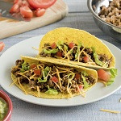
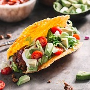

Tacosaurus Mex
A taco is a traditional Mexican dish consisting of a corn or wheat tortilla folded or rolled around a filling. A taco can be made with a variety of fillings, including beef, pork, chicken, seafood, vegetables, and cheese, allowing great versatility and variety You can also review our Legal Page for more information.
Ingredients
- 1 pound lean (at least 80%) ground beef
- 1 cup Old El Paso Thick 'n Chunky salsa
- 10 Old El Paso taco shells
- 1/2 head lettuce, shredded
- 1 medium tomato, chopped (3/4 cup)
- 1 cup shredded Cheddar cheese (4 ounces)
Directions
- Cook beef in 10-inch skillet over medium heat 8 to 10 minutes, stirring occasionally, until brown; drain
- Stir salsa into beef. Heat to boiling, stirring constantly; reduce heat to medium-low. Cook 5 minutes, stirring occasionally. Pour beef mixture into large serving bowl.
- Heat taco shells as directed on package. Serve taco shells with beef mixture, lettuce, tomato and cheese
Your Photos
- 
- 